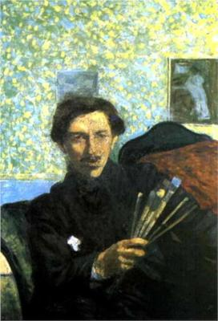

Umberto Boccioni fue un pintor y escultor italiano. Figura clave del movimiento futurista italiano, fue también uno de sus más destacados teóricos. Se inició en el divisionismo de la mano de Giacomo Balla. Después de pasar algún tiempo en París, Rusia, Padua y Venecia, se instaló definitivamente en Milán y se interesó por todo lo referente a la sociedad industrial moderna.
Influido por el simbolismo y por el expresionismo de Munch, y tras varios encuentros con Filippo Tommaso Marinetti, Carlo Carrà y Luigi Russolo, la obra de Boccioni se desarrolló a partir de 1910 alrededor de dos conceptos clave: dinamismo y simultaneidad. Entre sus obras cabe destacar La ciudad que surge (1910) y La calle ante la casa (1911), pinturas que, aun siendo formalmente distintas, hacen referencia al mismo tema, la ciudad, que para los futuristas simbolizaba la modernidad, el movimiento y la velocidad.
En cuanto a su actividad escultórica, que desarrolló paralelamente a la pictórica, fue pionero en el uso de nuevos materiales, como el cristal, el cemento o el hierro, así como en el aprovechamiento de la luz eléctrica. Falleció en Sorte (Verona) el 16 de agosto de 1916, durante la Primera Guerra Mundial (se había alistado como voluntario), a causa de una caída de caballo.

En 1910 escribió el Manifiesto de la escultura futurista, donde puede leerse: "Hay que destruir la nobleza totalmente literaria del mármol y del bronce... el escultor debe utilizar veinte materias diferentes o más aún en una sola obra, con tal que la emoción plástica lo exija." El listado de materiales que a continuación propone incluye no sólo madera, cartón o vidrio, sino otros como crin, cuero, espejos o luz.
Para lograr en escultura esa interrelación de formas entre el objeto y lo que le rodea, sobre la que Boccioni funda la representación dinámica, es necesario materializar la atmósfera. Y, efectivamente, él logra literalmente corporeizarla, como puede comprobarse en Desarrollo de una botella en el espacio (1912) y Formas únicas de la continuidad del espacio (1913), ambas en el Museo Cívico de Arte Contemporáneo de Milán.